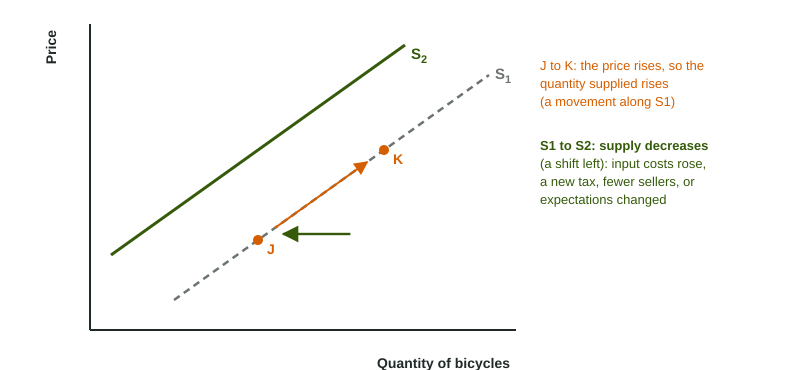

When the price of honey doubles, beekeepers find it worth tending extra hives and spending more hours collecting. When a drought hits, the same beekeepers offer fewer jars even at the old price. Sellers respond to the price along one curve, and to their costs and conditions by moving the whole curve.
The law of supply
Supply describes how much of a good sellers are willing and able to offer at each price. The law of supply says that as the price of a good rises, the quantity supplied rises, other things equal, so the supply curve slopes upward.
Why? Producing more usually costs more for each extra unit: a farm has to use less suitable land, pay workers overtime or run machines longer. A higher price covers those higher costs and makes the extra output worth producing. A higher price can also draw a seller's resources away from other products.
Worked example: read a supply schedule. A honey farm offers 20 jars a week at $4, 40 at $6, 60 at $8 and 80 at $10.
- Direction. Each $2 rise in price brings 20 more jars offered: a direct relationship, the law of supply.
- A change in quantity supplied. If the price rises from $6 to $10, the quantity supplied rises by jars. That is a movement along one supply curve.
- A change in supply. If a drought raises the farm's costs and it offers 10 fewer jars at every price (10 at $4, 30 at $6, and so on), the whole schedule changes: supply has decreased, and the curve shifts left.
Quantity supplied versus supply

The same shift-versus-movement rule applies to sellers. A change in the good's own price moves sellers along the supply curve: a change in quantity supplied, from J to K in the figure. A change in anything else that affects sellers shifts the curve: a change in supply, from S1 to S2. "The price rose, so supply increased" is the slip; the correct sentence is "the price rose, so the quantity supplied increased".
What shifts supply
| Determinant | Shifts supply right when | Shifts supply left when |
|---|---|---|
| Input costs (wages, materials, energy) | inputs get cheaper | inputs get dearer: flour for bread, chips for phones |
| Technology | a better method or machine lowers costs | (rarely) a method is lost or banned |
| Taxes and subsidies on producers | a subsidy per unit is paid | a tax per unit is collected from sellers |
| Expectations | sellers expect the price to fall soon, so they sell now | sellers expect the price to rise soon, so they hold goods back |
| Number of sellers | new firms enter the market | firms leave the market |
Notice that every supply shifter is about sellers: their costs, their methods, the taxes they pay, what they expect, how many of them there are. Buyers' tastes and incomes do not move supply at all, however much they matter for the market. A popular video that makes people want new phones shifts demand; the supply curve of phones stays put.
Worked example: which curve, which way? Four events in the smartphone market.
- Chip prices fall by a third. Chips are an input, so each phone costs less to make: supply shifts right.
- Three new phone makers open factories. More sellers: supply shifts right.
- A tax of $20 is collected from makers on every phone sold. It works like a higher cost: supply shifts left.
- A popular video makes buyers want new phones more. That is tastes, a demand shifter: supply does not move.
On a graph, an increase in supply is S2 drawn to the right of S1, a decrease is S2 to the left, each with an arrow. Use right and left, not up and down: a supply curve that shifts left also sits higher, and "up" invites the wrong reading. Label the axes Price and Quantity and the curves S1 and S2.